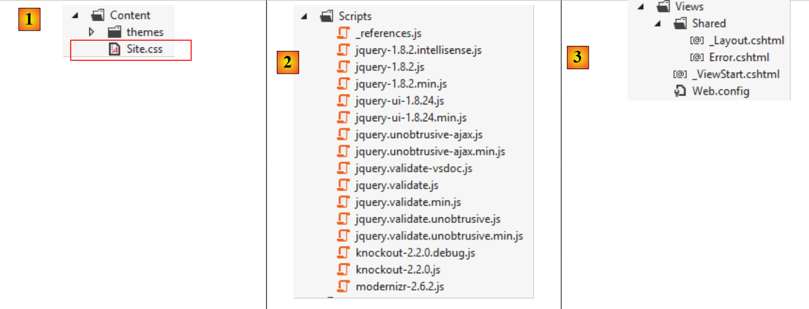
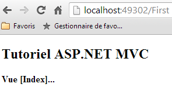
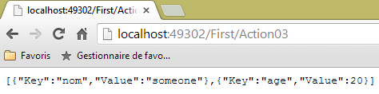

3. Contrôleurs, Actions, Routage
Considérons l'architecture d'une application ASP.NET MVC :
 |
Dans ce chapitre, nous regardons le processus qui amène la requête [1] au contrôleur et à l'action [2a] qui vont la traiter, un mécanisme qu'on appelle le routage. Nous présentons par ailleurs les différentes réponses [3] que peut faire une action au navigateur. Ce peut être autre chose qu'une vue V [4b].
3.1. La structure d'un projet ASP.NET MVC
Construisons un premier projet ASP.NET MVC avec Visual Studio Express 2012. Nous allons l'ajouter [1] à la solution utilisée dans le chapitre précédent :
 |
 |
- en [2], le nom du nouveau projet ;
- en [3, 4], nous choisissons un projet ASP.NET MVC de base. Ce modèle nous fournit une application Web vide avec cependant toutes les ressources (DLL, bibliothèques javascript, ...) pour travailler.
Le projet résultant est présenté en [5]. On en fera [6] le projet de démarrage de la solution :
 |
On notera en [5] les points suivants :
- l'architecture du projet reflète son modèle MVC :
- les contrôleurs C seront placés dans le dossier [Controllers],
- les modèles de données M seront placés dans le dossier [Models],
- les vues V seront placées dans le dossier [Views],
 |
- en [1], le fichier [Site.css] sera le fichier CSS par défaut de l'application ;
- en [2], un certain nombre de bibliothèques Javascript sont mises à notre disposition ;
- en [3], on trouve trois vues particulières : _ViewStart, _Layout, Error.
Le fichier [_ViewStart] est le suivant :
@{
Layout = "~/Views/Shared/_Layout.cshtml";
}
- ligne 1 : le caractère @ annonce une séquence C# dans la vue. En effet, on peut inclure du code C# dans une vue ;
- ligne 2 : définit une variable Layout qui définit la vue parente de toutes les vues. Elle correspond à la page maître du framework ASP.NET classique.
Le fichier [_Layout] est le suivant :
<!DOCTYPE html>
<html>
<head>
<meta charset="utf-8" />
<meta name="viewport" content="width=device-width" />
<title>@ViewBag.Title</title>
@Styles.Render("~/Content/css")
@Scripts.Render("~/bundles/modernizr")
</head>
<body>
@RenderBody()
@Scripts.Render("~/bundles/jquery")
@RenderSection("scripts", required: false)
</body>
</html>
Lorsqu'une vue du dossier [Views] sera rendue, son corps sera rendu par la ligne 11 ci-dessus. Cela signifie que la vue n'a pas à inclure les balises <html>, <head>, <body>. Celles-ci sont fournies par le fichier ci-dessus. Celui-ci est pour l'instant assez hermétique. Simplifions-le :
<!DOCTYPE html>
<html>
<head>
<meta charset="utf-8" />
<meta name="viewport" content="width=device-width" />
<title>Tutoriel ASP.NET MVC</title>
</head>
<body>
<h2>Tutoriel ASP.NET MVC</h2>
@RenderBody()
</body>
</html>
- ligne 6 : le titre commun à toutes les vues ;
- ligne 9 : l'entête commun à toutes les vues ;
- ligne 10 : le contenu propre à la vue affichée.
 |
- [Web.config] est le fichier de configuration de l'application Web. Il est complexe. On sera amené à le modifier lorsqu'on utilisera le framework [Spring.net] dans une architecture multicouche.
- [Global.asax] contient le code exécuté au démarrage de l'application. En général, ce code exploite les différents fichiers de configuration de l'application dont [Web.config].
3.2. Le routage par défaut des URL
Le code de [Global.asax] est pour l'instant le suivant :
using System.Web.Http;
using System.Web.Mvc;
using System.Web.Optimization;
using System.Web.Routing;
namespace Exemple_01
{
public class MvcApplication : System.Web.HttpApplication
{
protected void Application_Start()
{
...
}
}
}
- ligne 6, le namespace de la classe. Il vient directement du nom du projet et est présent dans les propriétés du projet :

 |
On fixe en [1], l'espace de noms par défaut. Il est alors utilisé par défaut pour toutes les classes qui seront créées dans le projet.
Revenons au code de [Global.asax] :
using System.Web.Http;
using System.Web.Mvc;
using System.Web.Optimization;
using System.Web.Routing;
namespace Exemple_01
{
public class MvcApplication : System.Web.HttpApplication
{
protected void Application_Start()
{
...
}
}
}
- ligne 9 : la classe [MvcApplication] dérive de la classe [HttpApplication]. Le nom [MvcApplication] peut être changé ;
- ligne 11 : la méthode [Application_Start] est la méthode exécutée au démarrage de l'application Web. Elle n'est exécutée qu'une fois. C'est là qu'on initialise l'application.
Le code de [Application_Start] est actuellement le suivant :
protected void Application_Start()
{
AreaRegistration.RegisterAllAreas();
WebApiConfig.Register(GlobalConfiguration.Configuration);
FilterConfig.RegisterGlobalFilters(GlobalFilters.Filters);
RouteConfig.RegisterRoutes(RouteTable.Routes);
BundleConfig.RegisterBundles(BundleTable.Bundles);
}
Pour l'instant, on n'a pas besoin de comprendre l'intégralité de ce code. Les lignes 5-8 définissent les routes acceptées par l'application Web. Revenons à l'architecture d'une application ASP.NET MVC :
 |
Nous avons expliqué que le [Front Controller] devait router une URL vers l'action chargée de la traiter. Une route sert à faire le lien entre un modèle d'URL et une action. Ces routes sont définies dans le dossier [App_Start] du projet par les classes [WebApiConfig, FilterConfig, RouteConfig, BundleConfig] :
 |
Seule la classe [RouteConfig] nous intéresse pour l'instant :
using System.Web.Mvc;
using System.Web.Routing;
namespace Exemple_01
{
public class RouteConfig
{
public static void RegisterRoutes(RouteCollection routes)
{
routes.IgnoreRoute("{resource}.axd/{*pathInfo}");
routes.MapRoute(
name: "Default",
url: "{controller}/{action}/{id}",
defaults: new { controller = "Home", action = "Index", id = UrlParameter.Optional }
);
}
}
}
Les lignes 12-16 définissent la forme des URL acceptées par l'application. On appelle cela une route. Il peut y avoir plusieurs routes possibles (= plusieurs modèles d'URL possibles). Elles se distinguent entre-elles par leur nom (ligne 13). La forme des URL de la route est définie ligne 14. Ici, l'URL aura trois composantes :
- {controller} : le nom d'une classe dérivée de [Controller]. Elle sera cherchée dans le dossier [Controllers] du projet. Par convention, si l'URL est /X/Y/Z, le contrôleur chargé de traiter cette URL sera la classe XController. Le suffixe Controller est ajouté au nom du contrôleur présent dans l'URL ;
- {action} : le nom d'une méthode dans le contrôleur désigné ci-dessus. C'est elle qui va recevoir les paramètres qui accompagnent l'URL et qui va les traiter. Cette méthode peut rendre divers résultats :
- void : l'action va construire elle-même la réponse au navigateur client
- String : l'action renvoie au client une chaîne de caractères ;
- ViewResult : renvoie une vue au client ;
- PartialViewResult : renvoie une vue partielle ;
- EmptyResult : une réponse vide est envoyée au client ;
- RedirectResult : demande au client de se rediriger vers une URL
- RedirectToRouteResult : idem mais l'URL est construite à partir de routes de l'application ;
- JsonResult : envoie une réponse JSON
- JavaScriptResult : renvoie un code Javascript au client ;
- ContentResult : renvoie un flux HTML au client sans passer par une vue ;
- FileContentResult : renvoie un fichier au client ;
- FileStreamResult : idem mais par une autre voie ;
- FilePathResult : ...
- {id} : un paramètre qui sera transmis à l'action. Pour cela l'action devra avoir un paramètre nommé id.
La ligne 15 définit des valeurs par défaut lorsque l'URL n'a pas la forme attendue /{controller}/{action}/{id}. Elle indique également que le paramètre {id} dans l'URL est facultatif. Voici une liste d'URL incomplètes et l'URL complétée avec les valeurs par défaut :
URL d'origine | URL complétée |
/ | /Home/Index |
/Do | /Do/Index |
/Do/Something | /Do/Something |
/Do/Something/4 | /Do/Something/4 |
/Do/Something/x/y/z | URL non routée |
3.3. Création d'un contrôleur et d'une première action
Créons un premier contrôleur :
 |
 |
- en [1] donnez le nom du contrôleur avec son suffixe [Controller] ;
- en [2], créez un contrôleur MVC vide ;
- en [3], il a été créé.
Le code de [FirstController] est le suivant :
using System;
using System.Collections.Generic;
using System.Linq;
using System.Web;
using System.Web.Mvc;
namespace Exemple_01.Controllers
{
public class FirstController : Controller
{
//
// GET: /First/
public ActionResult Index()
{
return View();
}
}
}
- ligne 7 : un namespace par défaut a été généré ;
- ligne 9 : la classe [FirstController] dérive de la classe [System.Web.Mvc.Controller] ;
- lignes 14-17 : une action [Index] a été générée par défaut. Elle est publique. C'est important, sinon elle ne sera pas trouvée. Elle rend un type [ActionResult] qui est une classe abstraite dont dérivent la plupart des résultats que rend habituellement une action. C'est un type " fourre-tout " qu'on peut préciser en le remplaçant par le nom réel du type rendu ;
- ligne 16 : la méthode ne fait rien. Elle se contente de rendre une vue, donc un type [ViewResult]. Le nom de la vue n'est pas précisé. Dans ce cas, le framework cherche dans le dossier [Views / First] une vue portant le nom de l'action, donc ici : [Index.cshtml].
Créons la vue [Index.cshtml] :
 |
- en [1], on clique droit dans le code de l'action et on prend l'option [Ajouter une vue] ;
- en [2], l'assistant propose une vue portant le nom de l'action. C'est ce qu'on veut ici ;
- en [3], par défaut l'utilisation de la page maître [_Layout.cshtml] est proposée ;
- en [4], une fois validé, l'assistant crée la vue dans un sous-dossier du dossier [Views] portant le nom du contrôleur (First).
Le code généré pour la vue [Index] est le suivant :
@{
ViewBag.Title = "Index";
}
<h2>Index</h2>
- lignes 1-3 : un code C# qui définit une variable ;
- ligne 5 : une balise HTML.
On remplace tout le code précédent par celui-ci :
<strong>Vue [Index]...</strong>
Résumons :
- nous avons un contrôleur C appelé [First] ;
- nous avons une action appelée [Index] qui demande l'affichage d'une vue appelée [Index] ;
- nous avons la vue V [Index].
Nous pouvons appeler l'action [Index] de deux façons :
- /First/Index ;
- /First, car [Index] est également l'action par défaut dans les routes.
Exécutons l'application (CTRL-F5). Nous obtenons la page suivante :

En [1], l'URL demandée a été http://localhost:49302. Il n'y a pas de chemin. On sait que notre routeur attend des URL de la forme /{controller}/{action}/{id}. Ces éléments étant absents, les valeurs par défaut sont utilisées. L'URL devient http://localhost:49302/Home/Index. Le contrôleur [Home] n'existe pas. Donc l'URL est rejetée.
Essayons maintenant l'URL http://localhost:49302/First/Index en la tapant directement dans le navigateur :
 |
La page ci-dessus a été générée par l'action [Index] du contrôleur [First]. La page générée par cette action est la vue [Index] dont le code était le suivant :
<strong>Vue [Index]...</strong>
Elle génère la partie [1]. La partie [2] elle, provient de la page maître [_Layout] que nous avons définie un peu plus tôt :
<!DOCTYPE html>
<html>
<head>
<meta charset="utf-8" />
<meta name="viewport" content="width=device-width" />
<title>Tutoriel ASP.NET MVC</title>
</head>
<body>
<h2>Tutoriel ASP.NET MVC</h2>
@RenderBody()
</body>
</html>
La ligne 9 a généré la partie [2] de la page. La vue [Index] n'intervient elle, qu'en ligne 10.
Si on affiche le code source de la page reçue, on retrouve bien la page [Index] incluse (ligne 10 ci-dessous) dans la page [Layout] :
Essayons maintenant l'URL [/First] :
 |
L'URL [/First] était incomplète. Elle a été complétée avec les valeurs par défaut de la route et est devenue [/First/Index]. On obtient donc le même résultat que précédemment.
3.4. Action avec un résultat de type [ContentResult] - 1
Créons une nouvelle action dans le contrôleur [First] :
using System.Text;
using System.Web.Mvc;
namespace Exemple_01.Controllers
{
public class FirstController : Controller
{
// Index
public ViewResult Index()
{
return View();
}
// Action01
public ContentResult Action01()
{
return Content("<h1>Action [Action01]</h1>", "text/plain", Encoding.UTF8);
}
}
}
La nouvelle action est définie lignes 14-18. Elle se contente de rendre une chaîne de caractères à l'aide de la méthode [Content] (ligne 16) de la classe [Controller] (ligne 6). Les paramètres de la méthode sont :
- la chaîne de caractères de la réponse ;
- un indicateur de la nature du texte envoyé : " text/plain ", "text/html ", " text/xml ", ... Cet indicateur est appelé type MIME (http://fr.wikipedia.org/wiki/Type_MIME ) ;
- le troisième paramètre permet de préciser le type d'encodage utilisé pour le texte.
Plutôt que d'utiliser le type abstrait [ActionResult], nos méthodes précisent le type réel rendu (lignes 9 et 14).
Demandons l'URL [/First/Action01]. On obtient la page suivante :
 |
Regardons le code source de la page reçue :
Le navigateur n'a reçu que le texte envoyé par l'action et rien d'autre. Ce mode est intéressant lorsqu'on veut demander au serveur Web des données pures sans l'habillage HTML autour. On notera ci-dessus, que le navigateur n'a pas interprété la balise HTML <h1>. Pour comprendre pourquoi, regardons dans Chrome, les échanges HTTP :
Le navigateur a envoyé les entêtes HTTP suivants :
Le serveur lui a répondu avec les entêtes suivants :
- ligne 3 : fixe la nature du document. On retrouve les attributs fixés dans la méthode [Action01]. C'est parce qu'on lui a dit que le document était de type "text/plain" et non "text/html" que le navigateur n'a pas interprété la balise <h1> qui était dans le document reçu.
3.5. Action avec un résultat de type [ContentResult] - 2
Considérons la troisième action suivante :
using System.Text;
using System.Web.Mvc;
namespace Exemple_01.Controllers
{
public class FirstController : Controller
{
...
// Action02
public ContentResult Action02()
{
string data = "<action><name>Action02</name><description>renvoie un texte XML</description></action>";
return Content(data, "text/xml", Encoding.UTF8);
}
}
}
- ligne 12 : on définit un texte XML ;
- ligne 13 : on l'envoie au navigateur en précisant que c'est du XML avec le type MIME " text/xml ".
Dans le navigateur, on obtient la page suivante :
 |
Regardons dans Chrome la réponse HTTP du serveur :
- ligne 3 : fixe la nature du document. On retrouve les attributs fixés dans la méthode [Action02] ;
- ligne 12 : la taille en octets du document envoyé par le serveur.
Le document envoyé par le serveur est celui-ci (copie Chrome) :
 |
3.6. Action avec un résultat de type [JsonResult]
Ajoutons l'action suivante au contrôleur [First] :
// Action03
public JsonResult Action03()
{
dynamic personne = new ExpandoObject();
personne.nom = "someone";
personne.age = 20;
return Json(personne,JsonRequestBehavior.AllowGet);
}
- ligne 4 : une variable de type dynamic. A l'exécution, on peut librement ajouter des propriétés à une telle variable. La propriété est créée en même temps qu'elle est initialisée ;
- lignes 5-6 : on initialise deux propriétés nom et age ;
- ligne 7 : on retourne la représentation JSON (Javascript Object Notation) de l'objet. Le JSON permet de sérialiser un objet en chaîne de caractères et inversement de désérialiser une chaîne en objet. C'est une alternative à la sérialisation / désérialisation XML ;
- ligne 2 : l'action retourne un type [JsonResult]. Ce type ne peut être retourné que pour une requête POST. Si on veut la retourner pour une méthode GET, il faut donner au second paramètre du constructeur de la class Json (ligne 7), la valeur JsonRequestBehavior.AllowGet.
Lorsqu'on demande l'URL [/First/Action03], le navigateur affiche la chose suivante :
 |
La réponse HTTP du serveur est elle, la suivante :
- ligne 3 : précise que le document envoyé est du JSON ;
- ligne 10 : le document envoyé fait 58 octets. C'est le suivant :
L'élément dynamique [personne] est vu par JSON comme un tableau de dictionnaires où chaque dictionnaire :
- correspond à un champ de la variable [personne] ;
- a deux clés "Key" et "Value". "Key" a pour valeur associée le nom du champ et "Value" a pour valeur la valeur du champ.
3.7. Action avec un résultat de type [string]
Ajoutons l'action suivante au contrôleur [First] :
// Action04
public string Action04()
{
return "<h3>Contrôleur=First, Action=Action04</h3>";
}
Lorsque nous demandons l'URL [/First/Action04] avec Chrome, on obtient la réponse suivante :
 |
On voit que la balise <h3> a été interprétée. Regardons la réponse HTTP du serveur :
et le document suivant :
On voit ligne 3, que le serveur a indiqué envoyer du texte au format HTML. C'est pourquoi le navigateur a interprété la balise <h3>. Lorsqu'on veut envoyer du texte pur, il est donc préférable de rendre un [ContentResult] plutôt qu'un [string]. Le [ContentResult] nous permet en effet de préciser un type MIME "text/plain" pour indiquer qu'on envoie du texte non formaté, donc non susceptible d'interprétation de la part du navigateur.
3.8. Action avec un résultat de type [EmptyResult]
Soit la nouvelle action suivante :
// Action05
public EmptyResult Action05()
{
return new EmptyResult();
}
L'action se contente de rendre un type [EmptyResult]. Dans ce cas, le serveur envoie une réponse vide au client comme le montre sa réponse HTTP :
- ligne 9 : le serveur indique à son client qu'il lui envoie un document vide.
3.9. Action avec un résultat de type [RedirectResult] - 1
Soit la nouvelle action suivante :
// Action06
public RedirectResult Action06()
{
return new RedirectResult("/First/Action05");
}
L'action rend un type [RedirectResult]. Ce type permet d'envoyer au client un ordre de redirection vers l'URL paramètre du constructeur (ligne 4). Le client va alors émettre une nouvelle requête GET vers [/First/Action05]. Le client fait donc deux requêtes au total.
Le navigateur affiche le résultat de la seconde requête :
 |
Examinons la réponse HTTP du serveur dans Chrome :
 |
On voit ci-dessus, les deux requêtes du navigateur. Examinons la première requête [Action06]. La réponse HTTP du serveur est la suivante :
- ligne 1 : le serveur a répondu avec un code 302 Found. Pour l'instant, c'était 200 OK qui veut dire que le document demandé a été trouvé. Le code 302 indique qu'une redirection est demandée. L'adresse de redirection est donnée par la ligne 4. On retrouve là l'adresse de redirection que nous avions donnée dans le code de l'action ;
- ligne 11 : le serveur indique qu'avec sa réponse HTTP, il envoie un document de type text/html (ligne 3) de 132 octets (ligne 11). Lorsqu'on examine dans Chrome la réponse à la requête [Action06], elle est vide comme on pouvait s'y attendre. Il y a probablement une explication mais je ne la connais pas.
A cause de la redirection, le navigateur fait une nouvelle requête GET vers l'URL précisée ligne 4 ci-dessus comme on peut le voir dans Chrome ligne 1 ci-dessous :
3.10. Action avec un résultat de type [RedirectResult] - 2
Soit la nouvelle action suivante :
// Action07
public RedirectResult Action07()
{
return new RedirectResult("/First/Action05",true);
}
Ligne 4, on a ajouté un second paramètre au constructeur du type [RedirectResult]. C'est un booléen qui par défaut est à false. Lorsqu'on le passe à true, on modifie la réponse HTTP envoyée au client. Elle devient :
Ainsi le code de réponse envoyé au client est maintenant 301 Moved Permanently. La redirection se passe comme précédemment mais on indique que cette redirection est permanente. Cela permet aux moteurs de recherche de remplacer dans leurs résultats l'ancienne URL par la nouvelle.
3.11. Action avec un résultat de type [RedirectToRouteResult]
Soit la nouvelle action suivante :
// Action08
public RedirectToRouteResult Action08()
{
return new RedirectToRouteResult("Default",new RouteValueDictionary(new {controller="First",action="Action05"}));
}
- ligne 2 : l'action rend un type [RedirectToRouteResult]. Ce type permet de rediriger un client vers une URL spécifiée non pas par une chaîne de caractères comme précédemment mais par une route.
Les routes sont définies dans [App_Start/RouteConfig]. Il n'y en a qu'une actuellement :
routes.MapRoute(
name: "Default",
url: "{controller}/{action}/{id}",
defaults: new { controller = "Home", action = "Index", id = UrlParameter.Optional }
);
- ligne 4, on demande au client de se rediriger vers la route nommée [Default] avec la variable controller=First et la variable action=Action05. Le système de routage va alors générer l'URL de redirection /First/Action05. C'est ce que montre la réponse HTTP du serveur :
- ligne 1 : la redirection ;
- ligne 4 : l'adresse de redirection générée par le système de routage des URL.
3.12. Action avec un résultat de type [void]
Soit la nouvelle action suivante :
// Action09
public void Action09()
{
string nom = Request.QueryString["nom"] ?? "inconnu";
Response.AddHeader("Content-Type", "text/plain");
Response.Write(string.Format("<h3>Action09</h3>nom={0}", nom));
}
- ligne 2 : l'action ne rend aucun résultat. Elle écrit elle-même dans le flux de la réponse envoyée au client ;
- ligne 4 : on récupère un éventuel paramètre nommé [nom] dans la requête. Celle-ci est accessible via la propriété [Request] du contrôleur [Controller] dont hérite le contrôleur [First]. Le paramètre [nom] passé sous la forme [/First/Action09?nom=quelquechose], est disponible dans Request.QueryString["nom"]. La syntaxe de la ligne 4 est équivalente à :
- ligne 5 : la réponse envoyée au client est accessible via la propriété [Response] du contrôleur [Controller] dont hérite le contrôleur [First] ;
- ligne 5 : on fixe l'entête HTTP [Content-Type] qui indique la nature du document que le serveur s'apprête à envoyer au client. Ici "text/plain" indique que le document est du texte pur qui ne doit pas être interprété par le navigateur ;
- ligne 6 : on écrit dans le flux de la réponse, une chaîne de caractères. On y a inclus des balises HTML qui ne doivent pas être interprétées par le navigateur puisque celui-ci aura reçu auparavant l'entête HTTP [Content-Type : text/plain"]. C'est ce qu'on veut vérifier.
Compilons le projet et demandons l'URL [/First/Action09?nom=someone ][1] puis l'URL [/First/Action09 ] [2] :
 |
Regardons maintenant dans Chrome la réponse HTTP du serveur :
- ligne 3 : on retrouve l'entête HTTP que nous avions nous-même fixé dans le code de l'action.
3.13. Un second contrôleur
Créons dans le projet un second contrôleur. On suivra la méthode décrite au paragraphe 3.1, page 39. On l'appellera [Second].
 |
Son code généré est le suivant :
namespace Exemple_01.Controllers
{
public class SecondController : Controller
{
//
// GET: /Second/
public ActionResult Index()
{
return View();
}
}
}
Modifions-le de la façon suivante :
using System.Text;
using System.Web.Mvc;
namespace Exemple_01.Controllers
{
public class SecondController : Controller
{
// /Second/Action01
public ContentResult Action01()
{
return Content("Contrôleur=Second, Action=Action01", "text/plain", Encoding.UTF8);
}
}
}
Puis demandons l'URL [/Second/Action01] avec un navigateur. Nous obtenons la réponse suivante :
 |
Cette URL a été demandée avec une commande HTTP GET comme le montrent les logs HTTP de la requête dans Chrome :
L'URL peut être demandée également avec une commande HTTP POST. Pour le montrer, utilisons de nouveau l'application [Advanced Rest Client] :
 |
- en [1], on lance l'application (dans l'onglet [Applications] d'un nouvel onglet Chrome) ;
- en [2], on sélectionne l'option [Request] ;
- en [3], on précise l'URL demandée ;
- en [4], on indique que l'URL doit être demandée avec un POST ;
On active les logs de Chrome par (CTRL-I) afin d'avoir la réponse HTTP du serveur. Lorsqu'on exécute [Send] la requête précédente, les échanges HTTP sont les suivants :
Le navigateur envoie la requête suivante :
- ligne 1 : l'URL est bien demandée avec un POST ;
- ligne 4 : la taille en octets des éléments postés. Il n'y en a pas ici.
La réponse HTTP du serveur est elle la suivante :
- ligne 3 : le serveur envoie un document texte non formaté (plain) ;
- ligne 12 : de 148 caractères.
Le document envoyé est le suivant :
 |
On obtient le même document qu'avec le GET.
3.14. Action filtrée par un attribut
Créons la nouvelle action suivante :
// /Second/Action02
[HttpPost]
public ContentResult Action02()
{
return Content("Contrôleur=Second, Action=Action02", "text/plain", Encoding.UTF8);
}
L'action [Action02] est analogue à l'action [Action01] mais on indique qu'elle n'est accessible que par une commande HTTP POST (ligne 2). D'autres attributs sont utilisables :
HttpGet | ne sert que la commande GET |
HttpHead | ne sert que la commande HEAD |
HttpOptions | ne sert que la commande OPTIONS |
HttpPut | ne sert que la commande PUT |
HttpDelete | ne sert que la commande DELETE |
Demandons l'URL [/Second/Action02] directement dans le navigateur. Elle est alors demandée par un GET. Le navigateur affiche alors la réponse suivante :
 |
La réponse HTTP du serveur a été la suivante :
- ligne 1 : le code HTTP 404 Not Found indique que le serveur n'a pas trouvé le document demandé. Ici, l'action [Action02] n'a pu servir la requête GET car elle ne sert que les commandes POST ;
- ligne 3 : la taille du document renvoyé. C'est la page qui a été affichée par le navigateur :
 |
3.15. Récupérer les éléments d'une route
Dans les deux actions décrites précédemment, on écrivait quelque chose du genre :
public ContentResult Action02()
{
return Content("Contrôleur=Second, Action=Action02", "text/plain", Encoding.UTF8);
}
Les noms du contrôleur et de l'action étaient écrits en dur dans le code. Si on change ces noms, le code n'est plus correct. On peut avoir accès au contrôleur et à l'action de la façon suivante :
// /Second/Action03
public ContentResult Action03()
{
string texte = string.Format("Contrôleur={0}, Action={1}", RouteData.Values["controller"], RouteData.Values["action"]);
return Content(texte, "text/plain", Encoding.UTF8);
}
La route définie dans [App_Start/RouteConfig] est la suivante :
routes.MapRoute(
name: "Default",
url: "{controller}/{action}/{id}",
defaults: new { controller = "Home", action = "Index", id = UrlParameter.Optional }
);
Ligne 3, les trois éléments de la route peuvent être obtenus par RouteData.Values["élément"] avec élément dans [controller, action, id].
Demandons l'URL [http://localhost:49302/Second/Action03] :
 |
Nous avons bien récupéré et le nom du contrôleur et le nom de l'action.